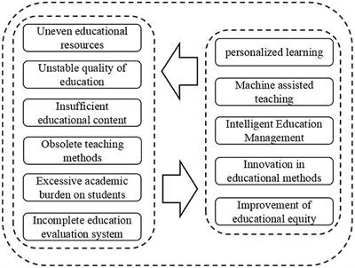

2. The advantage of ChatGPT
2.1 Information retrieval
2.2 Assistance in coding and computer science learning
2.3 Writing summaries of academic writings for batch reading
2.4 Enhanced Engagement and Personalized Learning
2.5 Augmented Critical Thinking and Problem-Solving Skills
2.6 Instantaneous Feedback and Learning Support
students can be provided with quick access to information on various topics by Chatgpt. Chatgpt can generate relevant resources in a short time to increase students’ efficiency. And maybe these resources are beyond course materials which can broaden their knowledge base and facilitate self-directed learning.
Just like the up-to-date model —GPT4, there are lots of advantages, such as self-debugging, solving math problems with code, and more knowledge in specific areas, where we find a possibility that it brings a benefit to students' learning outcomes (Zhou et al., 2023; Plevris et al.,2023). Especially, regarding self-debugging, there are more details that GPT-4 has stronger code generation and execution capabilities, and GPT-4 can adjust its problem-solving strategy based on feedback from code execution (Zhou et al., 2023).
The summarizing application came into existence with the launch of Advanced Data Analysis integration in ChatGPT, which allows users to upload and analyze PDF files and their content. This makes understanding academic research findings in batches possible.
ChatGPT offers students a unique opportunity to engage in interactive and personalized learning experiences. By simulating conversations with a virtual assistant, students can ask questions, seek clarification, and receive instant feedback on their queries. This personalized approach fosters active learning, as students can explore topics at their own pace and delve deeper into areas of interest. Consequently, this increased engagement can lead to improved learning outcomes.
Engaging with ChatGPT can stimulate critical thinking and problem-solving skills in students. By encouraging them to articulate their questions and thoughts, ChatGPT prompts students to think deeply about the subject matter. This process of formulating queries and receiving responses helps students develop analytical skills, logical reasoning, and the ability to evaluate information critically. Consequently, students become active participants in their learning journey, leading to improved learning outcomes.
ChatGPT's ability to provide instantaneous feedback can greatly benefit students' learning outcomes. Whether it's solving math problems, proofreading essays, or understanding complex concepts, students can receive immediate guidance and corrections. This real-time support helps students identify and rectify their mistakes promptly, reinforcing their understanding and boosting their confidence. Additionally, ChatGPT's vast knowledge base allows it to provide comprehensive explanations and resources, further enhancing students' learning experience.
More recently, the GPT-4 report was released. You can click here.
3. Potential Challenges and Ethical Considerations
While ChatGPT offers numerous benefits, it is essential to acknowledge potential challenges and ethical considerations. As an AI language model, ChatGPT's responses are generated based on patterns and data it has been trained on. Therefore, there is a possibility of biased or inaccurate information being provided. Educators and developers must ensure that the content and responses generated by ChatGPT are reliable, unbiased, and aligned with educational standards. Additionally, it is crucial to strike a balance between using AI tools and maintaining human interaction and guidance in the learning process.
